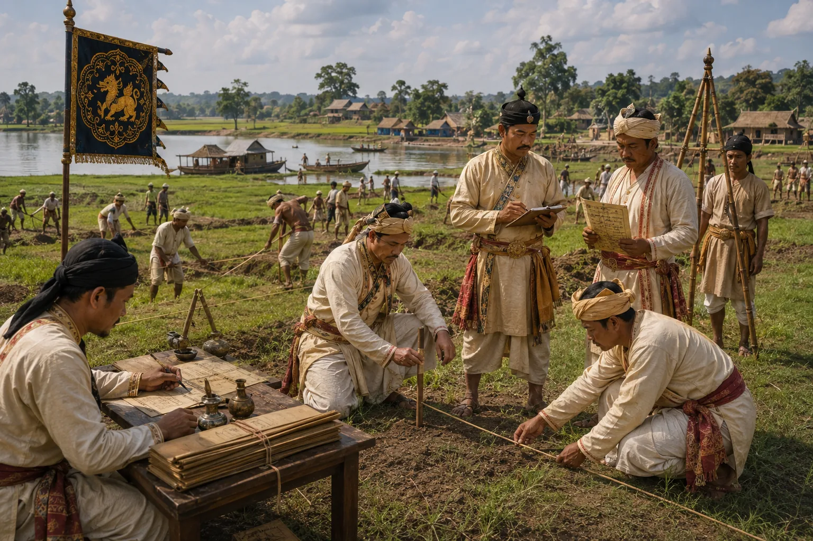

The Great Cadastral Land Survey (Pek-Kakar)
c. 1735–1740 · The Tungkhungia kings

Comprehensive statewide land measurement and census of households and cultivation acreage conducted across Assam.
Sources have not yet been catalogued for this record.
People: Siva Singha (Sutanphaa)